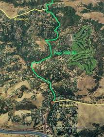

Week 6: Page Mill
18 Nov 2006
|
2006 Low-Key Hillclimbs Week 6: Page Mill 18 Nov 2006 |
|  |
| Aerial photo of Page Mill, courtesy of Stanford Cycling |
The Golden Chariot sounds, the hill awaits, the test begins!
You move to the front and immediately ramp up the tempo. This is it: the time for truth, the time to show what you have. Focussing inward, you ride, ride at a pace you know is yours, but which the others cannot sustain. You ride, you ride, ride toward the hill, and upward.
You glance back to assess the damage.
No!!! The wheel sucking maggots are strung out behind, exploiting your hard work, content in their parasitic bliss, waiting for your slightest show of weakness, for the chance to pounce. You are the stronger, you are the more determined, but to what gain? To what justice?
Today is different. At Page Mill Road, the penultimate week of the 2006 Low-Key Hillclimbs, we visit the Race of Truth, the individual time trial. Today each rider must look into hor or her own self for the pace, look into his or her soul for the will to ride, draw from his or her own legs and lungs the power to ride. No packs. No drafting. Just you. You and your bike.
The playing field: Page Mill Road, a climb of widely varying grades, one which tests each rider's gear selection, shifting strategy, and pace selection. Power up the steep grades, recovering on the flatter sections, or maintain a steady power, suppressing the variability with your gears? You decide. Today is yours.
Our insurance demands it: helmets are required. Sorry kids, no exceptions!
Staging will take place at the Park and Ride at the eastern intersection of Arastradero and Page Mill, just west of 280 and Page Mill Road, in Los Altos Hills
| stats | 8.7 miles, 2130 ft, 7% (over 5 miles) |
| format | time trial |
| time | reg 9 - 9:45 start 10am |
| coordinator | |
| aerial view | Stanford Cycling #1 Stanford Cycling #2 Stanford Cycling #3 |
| route profile | ACTC profile ACTC profile page |
| weather | Weather Underground Weather Bonk |
| registration form |
PDF form |
{kind=link}
{kind=link}
{kind=link}